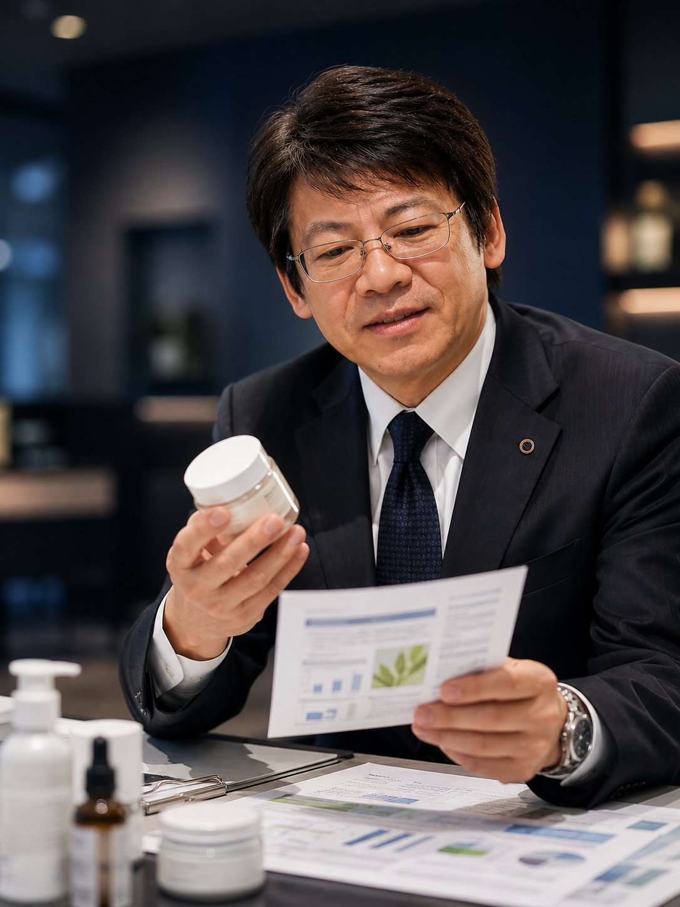
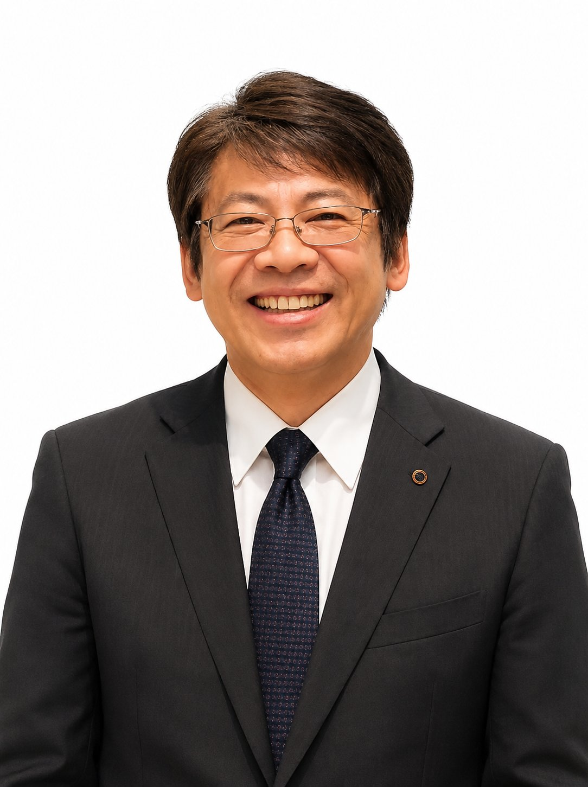

新しい商品を世に出す挑戦には、迷いがつきものです。Atlas Valueは、正しい方向を見極める羅針盤として、そして価値の種を見つけ育てる伴走者として、経営者・開発担当者の判断品質を高めるお手伝いをします。
MITSUME
それがAtlas Valueの目利き力です。商品開発の現場で40年培ってきた「なぜ売れるのか」「なぜ失敗するのか」を見抜く目を、貴社の商品開発診断に活かします。
※本サイトの内容は商品開発における気づき・示唆の提供を目的としており、効能効果を保証するものではありません。

FIVE VALUES
本質を見抜き、正しい判断につなげる
最適な道筋を示す
新たな挑戦を後押しする
価値の種を育て、成長につなげる
縁の下の力持ちとして寄り添う
PROFILE
著名着圧ソックス、著名磁力ネックレスなど、健康雑貨・ヘルスケア用品の商品開発に長年携わってきた経験をもとに、貴社の挑戦を支えます。
